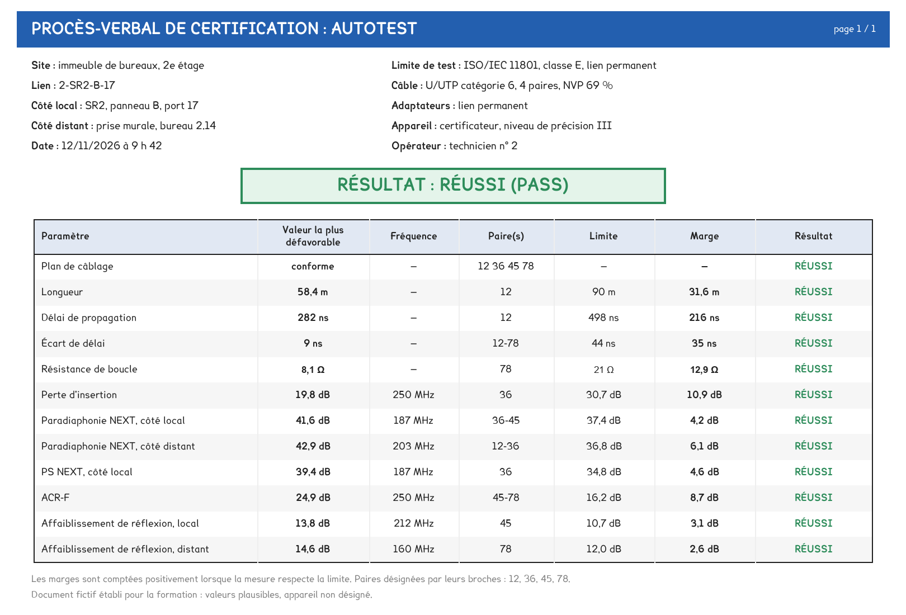

BTS FED option C · 1re année
Dix-sept savoirs, quatre familles, trois épreuves. Ce que le diplôme attend de vous en domotique tient sur une page, et douze de ses lignes n'existent qu'à l'option C. La carte en bas de page dit ce que vous avez déjà lu et travaillé.
1 outil · 6 questions · 3 replis · 2 figures
Savoirs travaillés
Le BTS Fluides, énergies, domotique a trois options. La vôtre, l’option C « domotique et bâtiments communicants », partage avec les deux autres les épreuves, les compétences et une grande partie des savoirs. Ce qui la distingue tient dans trois sections du référentiel : B8, C et D.
Le référentiel de mars 2014 donne, pour chaque savoir, un niveau attendu par option. Cette fiche ne retient que la colonne de l’option C, et les dix-sept savoirs que le cours de domotique de première année travaille.
Un code de savoir, comme D1-1, figure en tête de chaque page de ce site. Il renvoie à une ligne du référentiel, et cette ligne porte un niveau. C’est ce niveau qui dit ce que l’épreuve a le droit de vous demander.
Les systèmes centralisés, section B8
| Code | Intitulé | Niveau |
|---|---|---|
| B8-1 | Architecture des systèmes centralisés : constituants et signaux ; standards de communication, protocoles, topologie ; outils de description et analyse fonctionnelle | 3 |
| B8-2 | Domaines d’application : contrôle d’accès, interphonie, intrusion, vidéosurveillance, incendie, éclairage de sécurité, alarmes techniques, assistance aux personnes, automatismes, multimédia | 3 |
L’énergie, l’éclairage et la régulation, sections B6 à B11
| Code | Intitulé | Niveau |
|---|---|---|
| B6-1 | Photovoltaïque | 3 |
| B6-2 | Éolien | 3 |
| B7 | Éclairage intérieur et extérieur, asservissement | 3 |
| B9 | Comptage des énergies | 3 |
| B10 | Piles, accumulateurs, alimentations secourues | 3 |
| B11 | Régulation : boucles, modes d’action | 3 |
L’énergie électrique, section C
| Code | Intitulé | Niveau |
|---|---|---|
| C1-1 | Distribution BT et schémas (2) ; TGBT communicant (3) | 2 et 3 |
| C2-1 | Moteurs électriques | 2 |
| C2-2 | Variation de vitesse | 2 |
| C3 | Tarification, délestage | 3 |
La communication, section D
| Code | Intitulé | Niveau |
|---|---|---|
| D1-1 | Médias de communication : bus, radio, courant porteur, fibre | 3 |
| D1-2 | Standards et protocoles des métiers | 3 |
| D2-1 | Réseaux informatiques : matériel (3), logiciel (2), CEM (2) | 3 |
| D2-2 | VDI, voix-données-images : matériel et logiciel | 3 |
| D2-3 | Téléphonie numérique et IP | 3 |
Pour aller plus loin
Le savoir B8-1 occupe trois lignes du référentiel, toutes au niveau 3 pour l’option C.
La première nomme les constituants d’un système : les capteurs, les pré-actionneurs, les actionneurs, la centrale, les réseaux, la supervision et l’hypervision, avec leur principe de fonctionnement, leurs grandeurs caractéristiques et leurs types de signaux.
La deuxième porte les standards de communication : couches matérielles et logicielles, protocoles et interopérabilité, topologie. Elle est à 0 pour les deux autres options.
La troisième porte les outils de description : analyse fonctionnelle, schémas fonctionnels, graphes fonctionnels paramétrés. Le référentiel attend la rédaction de l’analyse fonctionnelle d’un système simple, et l’exploitation de celle d’un système complexe.
Le référentiel définit quatre niveaux, et chacun englobe les précédents. Un savoir attendu au niveau 3 suppose donc les niveaux 1 et 2 acquis.
| Niveau | Nom | Ce que l’on attend de vous |
|---|---|---|
| 1 | Information | Avoir une vue d’ensemble du sujet, partielle ou globale |
| 2 | Expression | Définir et employer les termes du domaine : maîtriser un savoir |
| 3 | Maîtrise d’outils | Utiliser des règles, des méthodes, des principes pour atteindre un résultat : maîtriser un savoir-faire |
| 4 | Maîtrise méthodologique | Poser et résoudre un problème, organiser ses éléments, décider en vue d’un but |
Le niveau 3 est celui du savoir-faire. Une question de niveau 3 ne demande pas de nommer un média, mais de le choisir ; pas de citer les 350 m, mais de vérifier une ligne ; pas de décrire le PoE, mais de dimensionner un commutateur. Presque toute la domotique de l’option C est à ce niveau.
Aucun savoir de domotique n’est au niveau 4, et aucun n’est au niveau 1. Réviser le vocabulaire seul prépare le niveau 2 ; l’épreuve, elle, interroge au niveau 3. Les seuls savoirs à 2 sont la distribution BT, les moteurs, la variation de vitesse, et deux aspects des réseaux, le logiciel et la CEM.
Les deux autres options, génie climatique et fluidique, froid et conditionnement d’air, étudient aussi la régulation, le comptage ou l’analyse fonctionnelle. Mais douze lignes du référentiel sont à 0 ou 1 pour elles, et à 3 pour vous.
| Ligne du référentiel | Option A | Option B | Option C |
|---|---|---|---|
| B8-1 : standards de communication, protocoles, topologie | 0 | 0 | 3 |
| B8-2 : huit des dix domaines d’application, de l’accès au multimédia | 0 ou 1 | 0 ou 1 | 3 |
| B7 : éclairage intérieur et extérieur | 1 | 0 | 3 |
| B10 : piles, accumulateurs | 1 | 1 | 3 |
| B10 : alimentations secourues | 1 | 1 | 3 |
| C1-1 : le TGBT communicant | 1 | 1 | 3 |
| C3 : délestage | 1 | 1 | 3 |
| D1-1 : médias de communication | 1 | 1 | 3 |
| D2-1 : réseaux informatiques, matériel | 1 | 1 | 3 |
| D2-2 : VDI, matériel | 1 | 1 | 3 |
| D2-2 : VDI, débit et sécurité logicielle | 0 | 0 | 3 |
| D2-3 : téléphonie numérique et IP | 0 | 0 | 3 |
C’est votre domaine propre. Aucune autre option ne le couvre, et c’est celui où vous serez, et resterez, les plus compétents : un technicien de l’option A appelle quelqu’un pour un réseau VDI, vous êtes ce quelqu’un.
Pour aller plus loin
Les cinq lignes restantes sont au niveau 3 pour tout le monde, ou presque : l’architecture des systèmes centralisés et l’analyse fonctionnelle, la régulation, le comptage, les protocoles des métiers, le photovoltaïque.
Ce sont elles que le sujet d’écrit, commun aux trois options, interroge le plus volontiers. Un candidat de l’option C y arrive avec un avantage : il a vu ces savoirs sur des systèmes communicants, là où les autres les ont vus sur une chaufferie ou une centrale de traitement d’air.
| Épreuve | Unité | Coef. | Forme | Ce qui s’y joue pour la domotique |
|---|---|---|---|---|
| E4 Étude des systèmes, sous-épreuve analyse et définition d’un système | U41 | 4 | écrit de 4 h, sujet commun aux trois options | B8, B9, B11 : les systèmes centralisés, le comptage et la régulation, environ 22 % de l’écrit |
| E5 Interventions sur les systèmes | U5 | 5 | contrôle en cours de formation, deux situations sur un système de votre option | la première situation contrôle C7, réaliser des essais et des mesures, avant la fin de la première année |
| E6 Épreuve professionnelle de synthèse, sous-épreuve conduite de projet | U61 | 5 | revues de projet, puis soutenance orale de 50 min | le dossier d’installation, la notice, les relevés d’essais |
Un essai a toujours la même forme : une grandeur mesurée, une limite, une marge, un verdict, puis un rapport. La certification d’un lien VDI, vue en séance A8, est un essai complet, et c’est ce que la commission attend de voir conduire.

Pour aller plus loin
La progression prévoit cinq notes et le CCF, sur les deux fils. Les devoirs sont sur le fil études, les travaux notés sur le fil atelier.
| Semaine | Évaluation | Ce qu’elle mesure |
|---|---|---|
| 1 | É0, positionnement de 45 min, non noté | ce qui est acquis du bac pro : schéma, circuit, réseau ; refait à l’identique en semaine 26 |
| 10 | É1, devoir de 2 h | médias, topologie, réseau IP, CEM, VDI, téléphonie |
| 14 | É2, TP noté de 2 h | C6 : réaliser une fonction imposée, et sa notice |
| 18 | CCF E5, situation 1, 4 h | C7 : essais et mesures |
| 22 | É3, devoir de 2 h | analyse de risques, zonage, choix d’un système de sûreté |
| 25 | É4, devoir de 2 h | régulation, comptage, facture, délestage |
| 26 | É5, dossier et présentation | notice, carnet de câbles, plan de récolement |
La seconde situation de CCF, sur C6 et C8, a lieu avant les congés de printemps de la deuxième année.
La carte ci-dessous reprend les dix-sept savoirs, avec leur niveau et les pages qui les enseignent. Elle lit les marques « lu » et les exercices réussis sur cet appareil, et rien d’autre : aucune donnée ne quitte le navigateur, et personne ne la voit.
Ces marques vivent dans la mémoire de l’appareil, pas dans un compte. Une tablette qui change de main garde les marques de la personne précédente ; un autre appareil repart de zéro.
Les codes en tête de chaque page renvoient à ces quatre tableaux. La fiche des mots du référentiel fixe le vocabulaire que ces savoirs emploient, et chaque séance dit lesquels elle travaille, et à quel niveau.
Fiche transversale de l'année. Elle ne remplace ni le référentiel ni les polycopiés, et ne donne aucun corrigé. La carte lit les marques de cet appareil ; rien n'est enregistré ailleurs.